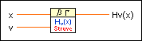
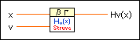
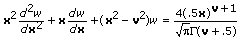

Struve Function VI
Owning Palette: Bessel Functions VIs
Requires: Full Development System
Computes the Struve function.

 Add to the block diagram Add to the block diagram |
 Find on the palette Find on the palette |
Owning Palette: Bessel Functions VIs
Requires: Full Development System
Computes the Struve function.

| Add to the block diagram |
Find on the palette |
 |
x is the input argument. If x is negative, the VI uses the absolute value of x. |
|
v is the index parameter. |
 |
Hv(x) returns the value of the Struve function. |
The Struve function of order v, Hv(x) is a solution of the following differential equation.

The function is defined according to the following intervals for the input values.


LabVIEW supports the entire domain of this function that produces real-valued results. For any integer value of order v, the function is defined for all real values of x. Otherwise, the function is defined for nonnegative real values of x.